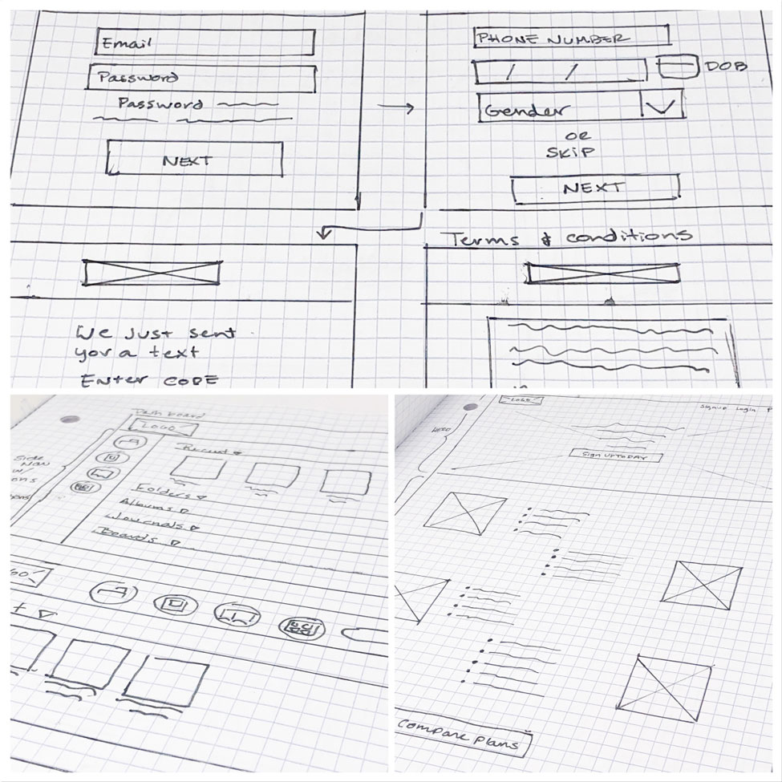
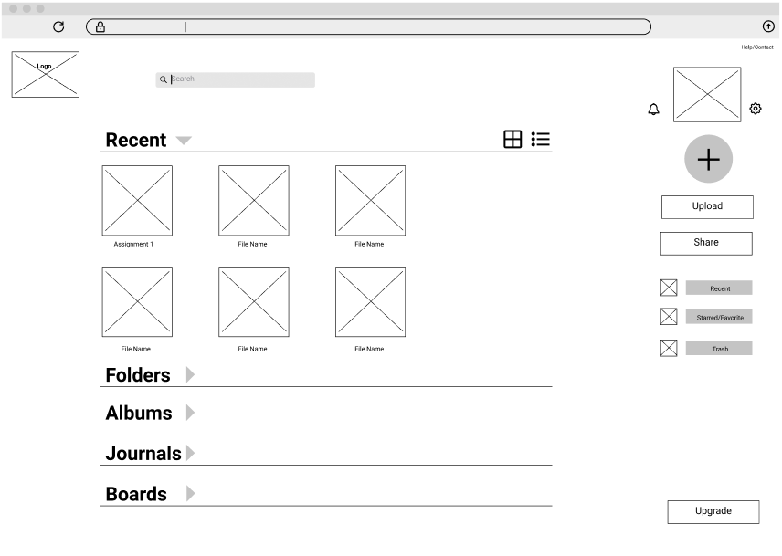
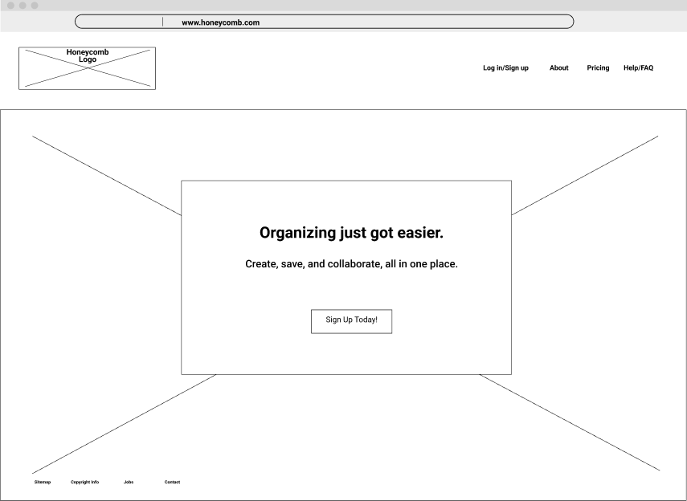
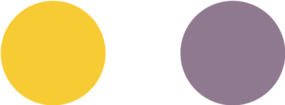
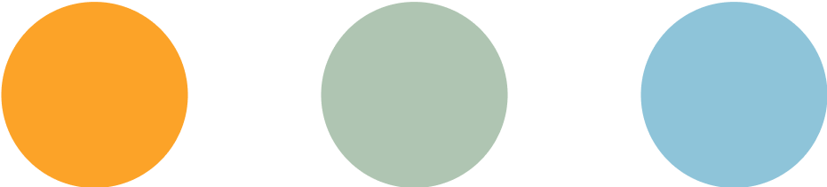
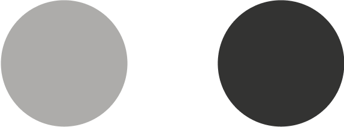
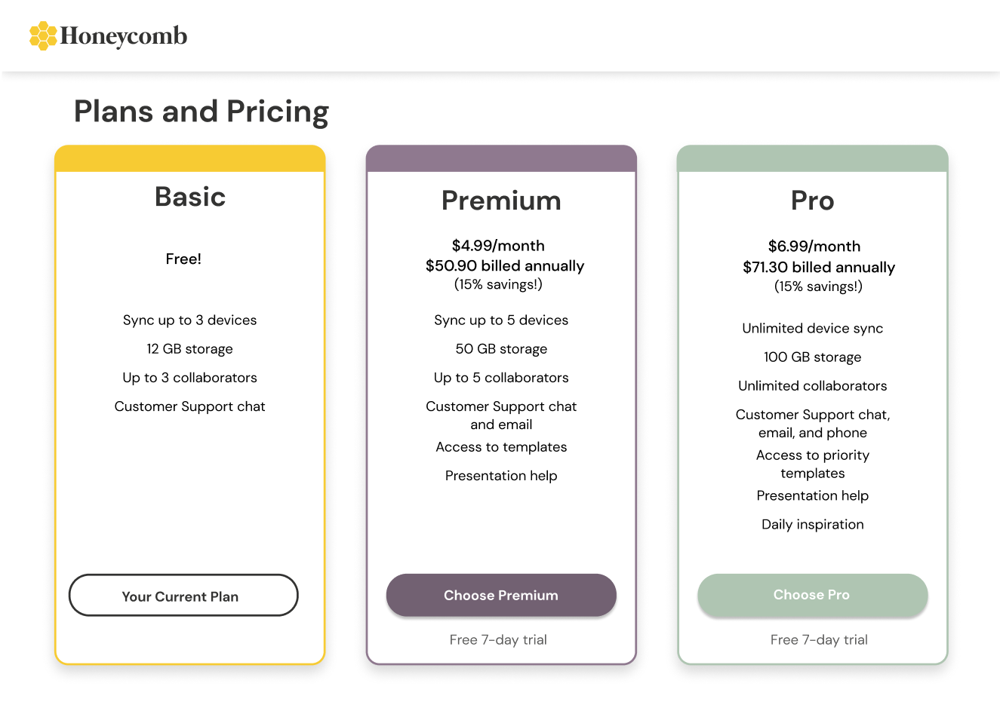
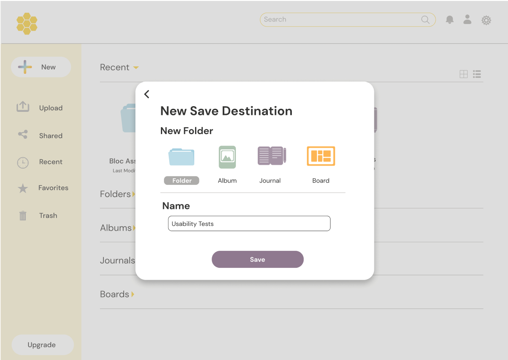

Honeycomb is an organization-focused cloud storage solution. With Honeycomb, users can save their files in the way that makes sense to them, whether they are saving documents, notes, photos, or websites.
View Invsion PrototypeOverview
My Role
- UX/UI
- Brand Development
- Visual Design
- User Testing
Tools Used
- Figma
- InVision
- Google Forms
- Pen & Paper
Problem
Honeycomb is meant to address the problem of cloud storage services that are too hard to organize, aesthetically unappealing, and constantly asking users to sign up for premium memberships just to get more storage space.
Solution
Honeycomb
This is Honeycomb. It has similarities to other cloud storage solutions, in that user can create whatever documents they want, or upload their own files. It is different in that the onus of organization is not put on the user–a frequent pain point among users surveyed.
It also gives users several options for storage. Even though the majority of users use cloud storage for making documents, spreadsheets, and presentations, there are many who take notes, store photos, and create boards as well.
Many users use multiple apps to achieve this. With Honeycomb, users can create different save destinations for all their different media, and organization happens first, so nothing gets lost.
Discovery & Research
Survey:Key Results
- 70% of users say they use cloud storage for personal use, rather than work or school.
- 30% of users use cloud storage for work, school, and personal use, but have to use different applications.
- 40% of users say difficulty organizing is their biggest frustration.
- 85% of users say being able to upload content from their computers is a must.
- 80% of users need to share their documents and collaborate with friends and colleagues.
- 75% of users say they need lots of options for storage and organization
- 75% of users want their service to be free to use.
Survey: Key Takeaways
Research showed user frustration with organizing, features, and cost. It also indicated that users wanted a service that gives them lots of options for storage, upload content from multiple devices, share and collaborate on content, and of course, is free to use. I let this data guide my decisions, because I wanted to make something that solved my users’ specific problems.
Personas
I interviewed some users to see what motivates them, and developed personas to help guide my choices.
View personas >Marissa is always looking for new content on the web. She is frustrated by unfriendly UIs and poor organization, and would love an application that made sharing and saving easy to use, and easy to look at.
Colby is a student always eager to collaborate on a project. He doesn’t like to spend a ton of time combing through his cloud for files, and just wants one app for all his sharing and storage needs.
Competitive Analysis
I also took a look at popular apps on the market to see what they were getting right, and maybe a few things that they could do better.
View SWOT charts >Key Takeaways
Pinterest, while not a typical “cloud storage solution” does save user’s information in the cloud, and is a popular method of saving and sharing content on the Internet. While users are limited in the content they can create with Pinterest, saved content is organized prior to saving
Google Drive offers users the most in content creation and storage space, and while organization is easy to accomplish, users need to actively engage in organizing their files.
Evernote follows a freemium model, and while the notetaking and content saving app does offer key functionality, the normal non-paying regular user would not find the free membership to be useful in the long term.
Information Architechture
User Stories
User Flows
After determining what user stories would make up my MVP I set out to map the user flows, first on paper, and then in Figma. During this process I found that the simplest way to satisfy user goals would be to incorporate modal screens into my design.
Sketches & Wireframes
I started sketching my ideas out onto paper for rapid iteration, then moved into Figma to turn them into wireframes for prototyping.
  User Testing
What I tested
Users were asked to make an account, create a piece of content, and then organize that piece of content.
What I learned
Users had difficulty differentiating between the login and signup flow. Some icons were difficult for users to understand without labels.
Changes I made to my design
In later iterations I completely separated the login and signup flows on the homepage and reorganized the page hierarchy to prioritize the signup. I also made sure every icon was assigned a label.
Brand Development
For branding, I took a look at both my target market (females 25-34) and my competitors to see what would appeal to users. After brainstorming and mindmapping potential brand names, I settled on Honeycomb. I wanted to avoid overused storage tropes such as clouds and boxes, in hopes it would make my product stand out more.
After exploring my logo options through sketches and digital renderings, I picked a simple logo and type treatment for a straightforward and contemporary mark.
Color Palette
Primary Colors
Secondary Colors
Neutrals
Honeycomb’s color palette was inspired by a field of wildflowers. The primary color palette of lavender and goldenrod were meant to convey happiness, optimism and calm.
Typography
Mermaid
ABCDEFGHIJKLMNOPQRSTUVWXYZ abcdefghijklmnopqrstuvwxyz 1234567890
DM Sans Regular
ABCDEFGHIJKLMNOPQRSTUVWXYZ abcdefghijklmnopqrstuvwxyz 1234567890
High Fidelity Mockups
 Second Round User Testing
What I tested
For the second round of testing I asked users to log in, upgrade their accounds to premium, and create a folder.
What I learned
All assigned tasks were completed correctly by users. Some small tweaks were called for in order to make some elements even more obvious and clear.
Changes I made to my design
For the final mockups, I changed a few things, including changing the fill color of the New icon to make it stand out even more, adding a scroll indicator to the homepage, and changed the CTA links on the homepage into buttons.

Final Insights
This project touched on many aspects of the design process, and it was gratifying to take something from idea to finished prototype. In some ways I feel that I was successful in delivering a product to my users that solved a problem they were having, and I learned a lot in the process.
Success wouldn't truly be success without some failure, however. If I could reapproach this project differently, I would have spent more time on the sketching portion of this project. Sketches are invaluable tools that make the difference between something that works alright, and something that is truly inspired. I also succumbed to scope creep in my design. My intent was to give my users all of the features they wanted (like having customized storage solutions), but these were determined to be too low priority to develop for the MVP. I continued to flesh these ideas out, despite having already decided to leave them out of the MVP. The result was a prototype with underdeveloped functional components as I tried my hardest to make it all work. I think the biggest lesson I learned from this project is that as a designer, you need to recognize when to let an idea go, and focus on what will truly enrich a user's experience.